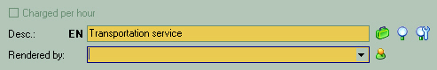
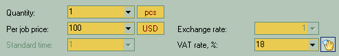
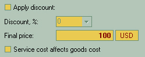

 Adding a service is less complicated that adding a product. Select a service from the list of user-defined services by clicking on Rendered by used to assign an employee or a third-party company who will be the service provider. |
 Quantity sets the amount of tasks/hours etc. sold or applied as this service position in the document. Per job price - service selling price, e.g. one hour, one delivery etc. Standard time used in conjunction with "Charged per hour" (see above) option to set the default duration of service provision. |
 This section allows you to manually set a discount rate for a service to a customer. The price for service will be displayed as "Final Price".
Service price affects goods price used if you want to include service price in the price of goods (e.g. delivery service charge included in the price of goods delivered). |